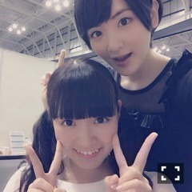
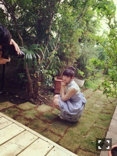

| 2015/06 09 Tue | ひめたん-OoO-その547 |
お久しぶりになってしまって
すみません！
ちょっと元気がなくて
めーるも日記もおやすみしてました
でも元気になってきました！
じょしらくのお稽古に
12th製作に、収録に取材にと
充実した日々を送ってます(´｡･v･｡｀)
プリンシパル以外では
舞台もお芝居もほとんど経験がないので
吸収することがたくさん！
手寅ちゃん演じるたびに
こんなこと思うんじゃないかな～
こんな仕草するんじゃないかな～とか
彼女の引き出しを増やしたいなと
日々向き合ってやっております。
ビジュアル公開されました！

昨日は横浜で握手会でした！
来てくれたみんな本当に
ありがとうございました♡
体調があまり良くなくて......
元気な姿を見せられなくて
ごめんなさい( ´•̥ω•̥` )
みなさんとお喋りできたおかげかな？
なんか元気になりました！
やっぱり握手の力ってすごーい♡♡
でも次回は、ひめがみなさんを
元気にするからねっ！
お洋服撮ってなくてごめん( ´•̥ω•̥` )
昨日来てくれたひとだけの
特権ってことで。
そして3週ぶりのらじらー！
福島県田村市から
公開生放送でお届けしましたo(^▽^)o
ゲストは声優アーツに遠藤ゆりかさん、
乃木坂から生駒ちゃんでした！

早くも2回目の登場o(^▽^)o
公開生放送ってことだったけど
生駒ちゃんが一緒で心強かったです
今回も狩りきれなかったけどね(笑)
そう、そう、公開生放送ならではの
企画もたくさんあったのですが
なんといっても私的に嬉しかったのが
「オリひめ&生駒」という
一夜限りのユニットを結成しまして
一緒にダンスしましたo(^▽^)o
夢が！夢が叶った！夢が叶ったよ！
一緒にランニングマンしちゃったー！
いつものブースじゃできないからね！
オリラジさん生駒ちゃん
ありがとうございました♡
初の公開生放送ということで
緊張してテンパってばかりでしたが
今回もお二人に助けていただきながら
楽しくお送りできました( ˇωˇ )
会場に来てくださった皆さんも
ラジオを聞いててくださった皆さんも
ありがとうございました！
らじらー！ファイル
お稽古でも使ってるよ～
それから～NOGIBINGO!4
なんと！なんと！今回！
ヒーローになっちゃいました！


さゆりぼんとひめりぼん、
スイートリボン！！
衣装は私たちが描いた通りだし
テーマソングもすてきだし
もうこんなこと人生で二度とないかも。
ひめたん的NOGIBINGO!お気に入り回
妄想リクエストと一緒に
ランクイン(´,,•ω•,,｀)てへ
最後に告知です～
6/2 グラビアザテレビジョン
6/8 TopYell
発売中です！
Gテレオフショット

ひめガール
 ひめたんが、夏に
ひめたんが、夏に
食べたくなる物は？？
そうめん！
最近暑い日が続きますが、
ひめたんはもうかき氷とか
食べましたか？
かき氷か～台湾で食べたっきりかな。
かき氷なら練乳いちごが好き♪
ひめたんはロングヘアだけど
お休みの日に自分で
ヘアアレンジしたりするの？
あんまり器用なことはできないんだよね
頑張れば編み込み巻きおろしとか
できたりもするよ
それ以上は難しいな～
デートの度に
クッキーとか焼いてくる女性って
ひめたんはどう思う？
凛子ちゃんみたいな子だよね
すてきだよね、ひめも
あんな女子に生まれたかったな......
いたのよ、学校にね、なんでもない日に
ケーキとかサラッと焼いてきちゃう子。
気が向いたから作ってみたよ～とか
もう、そんなんかわいいよ( ´｡•ω•｡` )
ひめたんはショートケーキ派？
それともチョコレートケーキ派？
スポンジあんま食べれないんだよね
生クリームでできてるのがいいな
どちらかというとチョコケーキかな？♡
じょしらくのお稽古するときに
ひとつこだわりがあって
いつものひめたんは普段
絶対ツインテールするんだけど
それだと手寅ちゃんになりきれないから
お稽古にはしてこないんだ～
舞台って
お芝居も歌もダンスも必要だし
しかも今回は落語も覚えなきゃだから
毎日やっても追いつかない！！
でも千秋楽まで
楽しんでやりたいと思います( ˇωˇ )
応援しててね☆
(＊´・ω・＊)
コメント(950)
2015/06/09 00:30